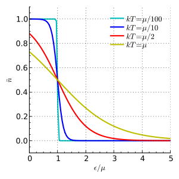
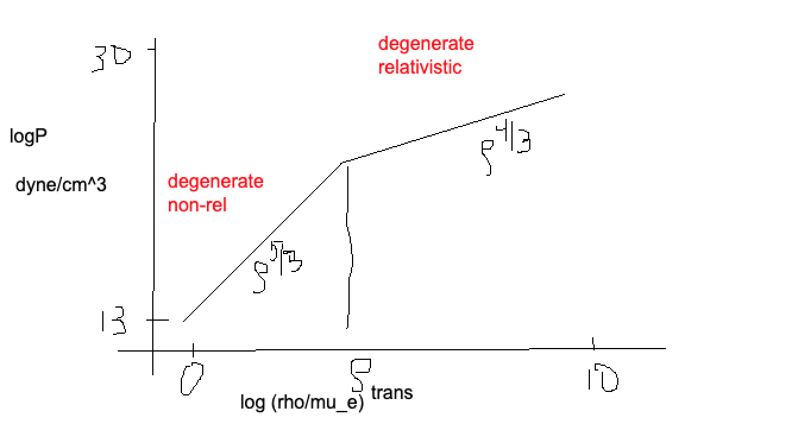
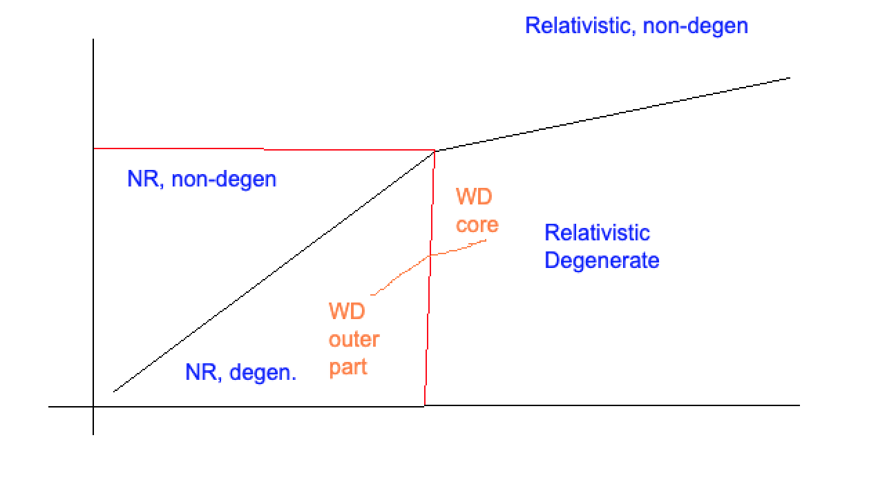

Virial Theorem and the Equation of State
Contents
Virial Theorem and the Equation of State¶
Virial Theorem¶
This is basically the energy form of hydrostatic equilibrium:
We will multiply by \(\frac43 \pi r^3\) and integrate:
What do we integrate? Pressures on the left, and radii on the right.
Replacing \(dm\) Integrating the right hand side:
where \(\Omega\) is the gravitational potential energy. Note that we absorbed the negative sign based on the definition of gravitational potential.
What about the left hand side? We need to consider the pressure at the center and the surface. We have with integration by parts:
What does this equation mean? We have a volume times a pressure in the first term, and this whole term (either pressure or volume) causes this term to go to zero. The second term is the same thing as a volume integral of pressure:
We can now combine the left and right hand sides:
We often see the virial theorem written as:
It is really easy to measure the kinetic energy of systems, making this equation really powerful!
There are some things to remember:
\(\Omega < 0\).
Total Energy is composed of \(E_{tot} = K + \Omega\)
Application of the Virial Theorem¶
Problem 1¶
Problem: A gas cloud (assume Jeans unstable). What happens when the cloud radiates a bit of heat away?
Assume equilibrium:
Since we are not losing mass, the gravitationa pressure increases. The cloud tries to restore equilibirum. To do this, the internal temperature has to increase.
Basically, the sequence goes as follows:
Lose energy: \(L\) gets radiated away. This causes the total energy to decrease, and the absolute value of energy increases.
As a result, \(K\) has to increase, and thus so does \(T\).
We then loop around, and we keep gaining temperture until \(T\) gets hot for fusion.
Problem 2¶
What is the difference between a bomb and a star?
For stars, \(M\) is big enough.
Remember that gravitational potentail energy is negative, so the radius is increasing until the temperature settles back down.
For a bomb, the everything happens so quickly that it overcomes the potential energy holding the bomb togther.
Beforehand, we were viralized. After, we are super virialized, and we have an explosion!
Problem 3¶
How do we estimate the temperature of the center of a star?
Equations of State¶
Radiation Dominated Example¶
What if we are out of the ideal gas regime? Let’s examine some non-ideal equations of state!
1. Blackbody Photon Energy Density \(\mathcal{E}\):
From the virial theorem: $\( P = \frac13 \mathcal{E} \)$
Let’s assume hydrostatic equilibrium:
If our pressure is dominated by photons, we can equate these pressures.
Also remember:
Pluggin this in just as we become super virial, we have:
Solving this for \(M\):
**We become radiation dominated around M>\(100M_\odot\) **
A more accurate treatment gives you something like \(M\sim 50M_\odot\). In this regime, stars respond fundamentally in a different way and must be treated as such. But, remember, different parts of the star can have different forms of pressure dominated.
Microphysics of the Equations of State¶
Equation of State
The microphysical properties of a material that tells us how to relate density \(\rho\), temperture \(T\), compositions \(X_i\), and more, to the pressure \(P(\rho, T, X_i, ...)\) and internal energy \(U = U(\rho, T, X_i, ...)\).
Given \(P\) and \(U\), we can determine the specific heats \(C_V\) and \(C_P\), adiabatic exponents \(\gamma_{ad}\), adiabatic temperature gradient \(\nabla_{ad}\) (convective versus radiative transport), and more.
An Example: Ideal Gas¶
The equation of state we use most frequently: $\( \boxed{P = nkT = \frac{\rho}{\mu m_p} kT} \)$
But, where does this come from? We must know the answer to find out when this does not apply. Everything we will cover here is in the Phillips textbook, in Chapter 2.
Kinetic Theory of Pressure¶
Where does the ideal gas equation come from? Formally, we can say (with \(p\) as momentum state, \(n_p(p)\) is the distribution of momenta, \(\epsilon_p\) is the kinetic enegy of a particle, and \(v_p\) is the velocity of the particle) the number density is:
The internal energy density is:
The pressure is:
We now need to discuss relativity! Recall that we can relate \(v_p\), \(p\), and \(\epsilon_p\) with special relativity. The total energy \(\epsilon^2\) is:
The kinetic energy piece is:
The velocity \(v_p\) is:
The Non-Relativitic Case:
In this case, we have:
Plugging this expression into our equations for pressure:
Thus, we have:
where \(u\) can be the internal energy per particle, whereas \(U\) is the internal energy for the whole system. \(U\) has units of energy per volume, whereas \(u\) has units of energy per unit mass.
The Extremely-Relativistic Case:
Here,
Now, we have:
Our nasty term \(\langle pv \rangle \rightarrow \langle pc \rangle\). This is the same as \(\epsilon_p\). Pushing this back through, we have:
We already have a factor of \(2\) difference in pressure between the non-relativistic and relativistic case.
Where do we see extremely relativistic conditions?
Anytime we are radiation dominated, the most appropriate equation of state to use is the relativist case!
It turns out this is the case for both photon pressure and electron pressure. Also surprisingly true when we have ions supporting the pressure.
Most of the time, however, we use \(P = \frac23 U\) for the equation of state.
Classical, Ideal Gas Case
For a classical, ideal gas in local thermodynamic equilibrium, we can write down the Maxwell-Boltzmann distribution:
The last term is the volume in momentum phase space. The first term is a normalization constant. This can also be thought of as an equilibrium state of a gas!
This is a totally nasty equation, so how do we arrive at the ideal gas law? We plug in the non-relativistic equations we found above:
Plugging this in and integrating the pressure, we find:
Integrating, we find:
When is this valid?
For non-relativistic cases. Also, however, true for “classical” relativistic particles.
We also will typically used the mixed species equation, which is:
Quantum Treatment¶
Fermions¶
The limit on the number of states is set by the Pauli exclusion principle. Let’s start with the fermion case (electrons, nucleons). Here, we care about the fraction of particles at energy \(\mathcal{E_p}\). This leads to the Fermi-Dirac distribution:
where \(\epsilon\) is the “chemical potential”. What does this look like:
{kind=link}
Bosons (photons)¶
Here, we have a similar result, the Bose-Einstein distribution:
To go from \(\epsilon_p\) to \(p\) is: \(f_{BE} \cdot N_{allowed states}\). We start with the maximum allowed number of quantum states per volume (where \(g_s\) is the max number of states per particle):
Degenerate , Non-Relativistic Electron Gas¶
Here, we have fermions with two states (spin-up and spin-down), so \(g_s = 2\). We also have fully degernate case:
where \(p_F\) is the maximum allowed momentum for a fermion. Turns out that:
which we can use as our integration bound.
We also want to compute the pressure. We have to do non-relativistic and relativistic here, where \(v = \frac{p}{m}\):
After all the algebra, we have the equation of state for a degenerate gas of electrons (fully):
where \(\mathcal{K} = 1.0036\times 10^{13} \frac{\text{dyne}}{\text{cm}^2} \left(\frac{g}{cm^3}\right)^{-5/3}\). This is the presure for a non-relativistic, degenerate electron gas. The only way that we get a truly, boxy FD distribution is for \(T=0\), so this is not an exact result.
Note
In a normal star, we can use ideal gases. It is only at really high densities (white dwarf, neutron star, molecular parts of outer stars, SN explosions) do we have degenerate behavior/quantum behavior.
Degenerate, Relativistic Electron Case¶
This is all the same, but we have to plug in \(v=c\).
This gives:
where \(\mathcal{K}_{ER} = 1.24\times 10^{15} \frac{\text{dyne}}{\text{cm}^2} \left(\frac{g}{cm^3}\right)^{-4/3}\) .
Plot¶
{kind=link}
Relativistic Transition¶
How do we identify the transition point between cases? Let’s try to calculate \(\rho\) where \(p \approx m_e c \sim h \left(\frac{3}{8\pi} n_e\right)^{1/3}\) . This gives:
When we are working this degenerate gas, it depends on if we have a hot or cool object! Thus, for NSs and WDs, the transition region is very different as a function of age.
Degeneracy Transition FOR ELECTRONS¶
How do we determine the transition point from degenerate to non-degenerate? Crudely, we have:
The transition point is when these are both \(\sim\) equal. Doing this and solving for \(\rho\):
where \(\mathcal{R} \equiv \frac{k}{m_p}\). Plugging in numbers, we have:
We can add this to our diagram, with an example of where WDs might fall:
{kind=link}